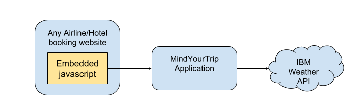

About the idea:
We have seen so many catastrophic natural disasters recently, affecting millions of lives and causing lot of damages.
When a natural disaster happens in any city, it effects everyone including the visitor of the city. Though the visitor have options to flee easily but sometimes intensity of disaster is so high that it blocks all form of transportation. In that situation, visitor become more vulnerable as they are not familiar with the area, don't know many people around and have limited resource.
If someone stuck in those situation, he/she may will think to avoid visiting the city during the time. My project is about to assist people doing that. Whenever people book a flight for any city or book a hotel online, he/she should get an alert if there is is any life threatening weather situation lies during the time, it will popup an alert message
How It Works:
Below diagram shows the overview of how this application works. Any airline booking website can embed two lines of code to use this weather alert and help their user to make an informed decision.
1. Add the makemytrip javascript and css link to the website header where you want to add the alert.
- src="js/mindyourtrip.js" type="text/javascript"
- rel="stylesheet" href="css/mindyourtrip.css"
2. Call the weather alert method.
- checkWeatherAlert(arrivingCityName, departingDate, returiningDate);
The parameter needed to call the method are
- 1. City Name
- 2. Arrving Departure
- 3. Departing Return
The above information is already being provided by the user for their booking. We just need these three information to get the weather detail.
So if user search for any flight, the airline website will also make a call to mindyourtrip application. MindYourTrip application will get the geo-code for arrivinng city name and internally call IBM weather headline API to check if there is any active weather alert for the arriving city during the flight booking and returning date.
A sample for webservice call.
If alert exists, it prompts a dialog on airline website with a summary of alert. The alert dialog will have options to click on either 'Thank You' or 'Show Me Detail' button. Clicking on 'Thank You' will close the alert dialog. Clicking on 'Show Me Detail' will again make an additional call to get detail weather API using the detailKey derived from the above headline API.
https://api.weather.com/v3/alerts/detail?alertId="+detailKey+"&format=json&language=en-US&apiKey="+weather_api_key;
The alert dialog will be auto close so that it should not block user activity. After 5 seconds of waiting time, dialog will be closed and a header on top will be added on the page. Again user can either close that header or click on the link to see the detail about alert.
Future recommendaiton:
Airline will have option to- Activate/deactivate the alert.
- Limit the severity for which alert should be activated.